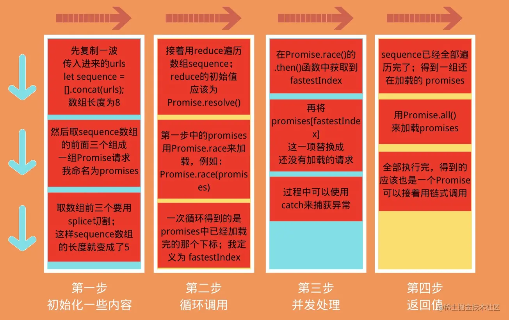

promise 执行顺序
- resolve() 后面的也是同步任务，跟 resolve 前面的同步执行。
- return resolve() 后面的内容不执行。
let promise = new Promise(function (resolve, reject) {
console.log("Promise");
resolve();
console.log("Promise2");
});
promise.then(function () {
console.log("resolved");
});
console.log("Hi!");
// Promise
// Promise2
// Hi!
// resolvedreject()后执行
一般总是建议，Promise 对象后面要跟 catch()方法，这样可以处理 Promise 内部发生的错误。catch()方法返回的还是一个 Promise 对象，因此后面还可以接着调用 then()方法
let promise = new Promise(function (resolve, reject) {
console.log("Promise");
reject();
});
// Promise
promise
.then(function () {
console.log("resolved");
})
.catch(() => {
console.log("err");
});
// err
promise
.catch(() => {
console.log("err");
})
.then(function () {
console.log("resolved");
})
.then(function () {
console.log("resolved2");
});
// err
// resolved
// resolved2resolve 函数和 reject 函数时带有参数
如果调用 resolve 函数和 reject 函数时带有参数，那么它们的参数会被传递给回调函数。
reject 函数的参数通常是 Error 对象的实例，表示抛出的错误；
resolve 函数的参数除了正常的值以外，还可能是另一个 Promise 实例，比如像下面这样。
const p1 = new Promise(function (resolve, reject) {
setTimeout(() => {
console.log("2");
reject(new Error("fail"));
console.log(3);
}, 2000);
});
const p2 = new Promise(function (resolve, reject) {
setTimeout(() => {
console.log("1");
resolve(p1);
console.log(4);
}, 4000);
});
p2.then((result) => console.log("r",result)).catch((error) =>
console.log('e',error)
);
// 结果：2 3 1 4 e Error: fail先执行p1输出2，3，这时p1是一个Promise <rejected> Error: fail。然后输出1，4；由于p2中resolve的入参是一个promise p1,这时p2的结果就是p1的返回结果。所以p2.then().catch()执行的是.catch
Promise.prototype.finally()
finally()方法用于指定不管 Promise 对象最后状态如何，都会执行的操作。该方法是 ES2018 引入标准的。
finally()方法的回调函数不接受任何的参数，也就是说你在.finally()函数中是没法知道Promise最终的状态是resolved还是rejected的
它最终返回的默认会是一个上一次的Promise对象值，不过如果抛出的是一个异常则返回异常的Promise对象。
Promise.resolve('1')
.then(res => {
console.log(res)
})
.finally(() => {
console.log('finally')
})
Promise.resolve('2')
.finally(() => {
console.log('finally2')
// return '我是finally2返回的值' // ==> finally2后面的then函数 2
throw new Error('我是finally中抛出的异常') // ==>捕获错误 Error: 我是finally中抛出的异常
})
.then(res => {
console.log('finally2后面的then函数', res)
})
.catch(err => {
console.log('捕获错误', err)
})
// 1
// finally2
// inally
// 捕获错误 Error: 我是finally中抛出的异常上面代码中，不管 promise 最后的状态，在执行完 then 或 catch 指定的回调函数以后，都会执行 finally 方法指定的回调函数
finally相关错题
Promise.all()
如果作为参数的 Promise 实例，自己定义了 catch 方法，那么它一旦被 rejected，并不会触发 Promise.all()的 catch 方法。
const p = Promise.all([p1, p2, p3]);
all
- 只有 p1、p2、p3 的状态都变成 fulfilled，p 的状态才会变成 fulfilled，此时 p1、p2、p3 的返回值组成一个数组，传递给 p 的回调函数。
- 只要 p1、p2、p3 之中有一个被 rejected，p 的状态就变成 rejected，此时第一个被 reject 的实例的返回值，会传递给 p 的回调函数。
const p1 = new Promise((resolve, reject) => {
resolve('hello');
})
.then(result => result)
.catch(e => e);
const p2 = new Promise((resolve, reject) => {
throw new Error('报错了');
})
.then(result => result)
.catch(e => e);
Promise.all([p1, p2])
.then(result => console.log(result))
.catch(e => console.log(e));
// ["hello", Error: 报错了]上面代码中，p1 会 resolved，p2 首先会 rejected，但是 p2 有自己的 catch 方法，该方法返回的是一个新的 Promise 实例，p2 指向的实际上是这个实例。该实例执行完 catch 方法后，也会变成 resolved，导致 Promise.all()方法参数里面的两个实例都会 resolved，因此会调用 then 方法指定的回调函数，而不会调用 catch 方法指定的回调函数。
如果 p2 没有自己的 catch 方法，就会调用 Promise.all()的 catch 方法。
Promise.race()
const p = Promise.race([p1, p2, p3]);
race
- 只要 p1、p2、p3 之中有一个实例率先改变状态，p 的状态就跟着改变。
- 那个率先改变的 Promise 实例的返回值，就传递给 p 的回调函数
Promise.allSettled()
Promise.allSettled()方法接受一组 Promise 实例作为参数，包装成一个新的 Promise 实例。只有等到所有这些参数实例都返回结果，不管是 fulfilled 还是 rejected，包装实例才会结束。该方法由 ES2020 引入。
该方法返回的新的 Promise 实例，一旦结束，状态总是 fulfilled，不会变成 rejected。状态变成 fulfilled 后，Promise 的监听函数接收到的参数是一个数组，每个成员对应一个传入 Promise.allSettled()的 Promise 实例。
const resolved = Promise.resolve(42);
const rejected = Promise.reject(-1);
const allSettledPromise = Promise.allSettled([resolved, rejected]);
allSettledPromise.then(function (results) {
console.log(results);
});
// [
// { status: 'fulfilled', value: 42 },
// { status: 'rejected', reason: -1 }
// ]有时候，我们不关心异步操作的结果，只关心这些操作有没有结束
下面是返回值用法的例子。
const promises = [fetch("index.html"), fetch("https://does-not-exist/")];
const results = await Promise.allSettled(promises);
// 过滤出成功的请求
const successfulPromises = results.filter((p) => p.status === "fulfilled");
// 过滤出失败的请求，并输出原因
const errors = results
.filter((p) => p.status === "rejected")
.map((p) => p.reason);Promise.any()
ES2021 引入了 Promise.any()方法。该方法接受一组 Promise 实例作为参数，包装成一个新的 Promise 实例返回。只要参数实例有一个变成 fulfilled 状态，包装实例就会变成 fulfilled 状态；如果所有参数实例都变成 rejected 状态，包装实例就会变成 rejected 状态。
限制异步操作的并发个数并尽可能快的完成全部请求
有8个图片资源的url，已经存储在数组urls中。
urls类似于[‘https://image1.png', ‘https://image2.png', ….]
而且已经有一个函数function loadImg，输入一个url链接，返回一个Promise，该Promise在图片下载完成的时候resolve，下载失败则reject。
但有一个要求，任何时刻同时下载的链接数量不可以超过3个。
请写一段代码实现这个需求，要求尽可能快速地将所有图片下载完成。
解题过程：
既然题目的要求是保证每次并发请求的数量为3，那么我们可以先请求urls中的前面三个(下标为0,1,2)，并且请求的时候使用Promise.race()来同时请求，三个中有一个先完成了(例如下标为1的图片)，我们就把这个当前数组中已经完成的那一项(第1项)换成还没有请求的那一项(urls中下标为3)。
直到urls已经遍历完了，然后将最后三个没有完成的请求(也就是状态没有改变的Promise)用Promise.all()来加载它们。

var urls = [
"https://hexo-blog-1256114407.cos.ap-shenzhen-fsi.myqcloud.com/AboutMe-painting1.png",
"https://hexo-blog-1256114407.cos.ap-shenzhen-fsi.myqcloud.com/AboutMe-painting2.png",
"https://hexo-blog-1256114407.cos.ap-shenzhen-fsi.myqcloud.com/AboutMe-painting3.png",
"https://hexo-blog-1256114407.cos.ap-shenzhen-fsi.myqcloud.com/AboutMe-painting4.png",
"https://hexo-blog-1256114407.cos.ap-shenzhen-fsi.myqcloud.com/AboutMe-painting5.png",
"https://hexo-blog-1256114407.cos.ap-shenzhen-fsi.myqcloud.com/bpmn6.png",
"https://hexo-blog-1256114407.cos.ap-shenzhen-fsi.myqcloud.com/bpmn7.png",
"https://hexo-blog-1256114407.cos.ap-shenzhen-fsi.myqcloud.com/bpmn8.png",
];
function loadImg(url) {
return new Promise((resolve, reject) => {
const img = new Image();
img.onload = function() {
console.log("一张图片加载完成");
resolve(img);
};
img.onerror = function() {
reject(new Error('Could not load image at' + url));
};
img.src = url;
});
}
function limitLoad(urls, handler, limit) {
let sequence = [].concat(urls); // 复制urls
// 这一步是为了初始化 promises 这个"容器"
let promises = sequence.splice(0, limit).map((url, index) => {
return handler(url).then(() => {
// 返回下标是为了知道数组中是哪一项最先完成
return index;
});
});
// 注意这里要将整个变量过程返回，这样得到的就是一个Promise，可以在外面链式调用
return sequence
.reduce((pCollect, url) => {
return pCollect
.then(() => {
return Promise.race(promises); // 返回已经完成的下标
})
.then(fastestIndex => { // 获取到已经完成的下标
// 将"容器"内已经完成的那一项替换
promises[fastestIndex] = handler(url).then(
() => {
return fastestIndex; // 要继续将这个下标返回，以便下一次变量
}
);
})
.catch(err => {
console.error(err);
});
}, Promise.resolve()) // 初始化传入
.then(() => { // 最后三个用.all来调用
return Promise.all(promises);
});
}
limitLoad(urls, loadImg, 3)
.then(res => {
console.log("图片全部加载完毕",res);
})
.catch(err => {
console.error(err);
});
实现 Promise 完整代码
class MyPromise {
constructor(fn) {
this.fulfilledQueue = [];
this.rejectedQueue = [];
this._status = PENDING;
this._value = null;
const handleFulfilledQueue = () => {
while (this.fulfilledQueue.length) {
let fulfiledFn = this.fulfilledQueue.shift();
fulfiledFn(this._value);
}
};
const handleRejectedQueue = () => {
console.log(this.rejectedQueue);
while (this.rejectedQueue.length) {
let rejectedFn = this.rejectedQueue.shift();
rejectedFn(this._value);
}
};
// 完成状态转变，执行回调队列中的回调函数
const _resolve = (val) => {
const fn = () => {
if (this._status !== PENDING) {
return;
}
if (val instanceof MyPromise) {
val.then(
(res) => {
this._status = FULFILLED;
this._value = res;
handleFulfilledQueue();
},
(err) => {
this._status = REJECTED;
this._value = err;
handleRejectedQueue();
}
);
} else {
this._status = FULFILLED;
this._value = val;
handleFulfilledQueue();
}
};
setTimeout(fn, 0);
};
// 完成状态Pending到REJECTED的转变，执行rejected队列中的回调函数
const _reject = (val) => {
const fn = () => {
if (this._status !== PENDING) {
return;
}
this._status = REJECTED;
this._value = val;
handleRejectedQueue();
};
setTimeout(fn, 0);
};
try {
// 处理外部传入函数执行异常
fn(_resolve, _reject);
} catch (e) {
return _reject(e);
}
}
then(successFn, failFn) {
return new MyPromise((resolve, reject) => {
// 执行成功时的回调函数
const handleSucess = (fn) => {
try {
if (typeof fn === "function") {
const res = fn(this._value);
if (res instanceof MyPromise) {
res.then(resolve, reject);
} else {
resolve(res);
}
} else {
resolve(this._value);
}
} catch (e) {
reject(e);
}
};
// 执行失败时的回调函数
const handleFail = (fn) => {
try {
if (typeof fn === "function") {
const res = fn(this._value);
if (res instanceof MyPromise) {
res.then(resolve, reject);
} else {
resolve(res);
}
} else {
reject(this._value);
}
} catch (e) {
reject(e);
}
};
switch (this._status) {
case PENDING: // 异步任务尚未完成，将回调函数推入相应队列
this.fulfilledQueue.push(() => {
handleSucess(successFn);
});
this.rejectedQueue.push(() => {
handleFail(failFn);
});
break;
case FULFILLED: // 异步任务成功完成，执行成功回调函数
handleSucess(successFn);
break;
case REJECTED: // 异步任务已失败，执行失败回调函数
handleFail(failFn);
break;
default:
console.log("Promise error status:", this._status);
break;
}
});
}
catch(failFn) {
return this.then(null, failFn);
}
finally(finalFn) {
return this.then(finalFn, finalFn);
}
static resolve(val) {
if (val instanceof MyPromise) {
return val;
} else {
return new MyPromise((resolve, reject) => {
resolve(val);
});
}
}
static reject(val) {
return new MyPromise((resolve, reject) => {
reject(val);
});
}
static all(promiseArr) {
return new Promise((resolve, reject) => {
const len = promiseArr.length;
let count = 0;
let result = [];
for (let i = 0; i < len; i++) {
promiseArr[i].then(
(val) => {
count++;
result.push[val];
if (count === len) {
resolve(result);
}
},
(err) => {
reject(err);
}
);
}
});
}
static race(promiseArr) {
return new Promise((resolve, reject) => {
const len = promiseArr.length;
for (let i = 0; i < len; i++) {
promiseArr[i].then(
(val) => {
resolve(val);
},
(err) => {
reject(err);
}
);
}
});
}
static allSettled(allPromise) {
return new Promise((resolve) => {
let settled = 0;
let result = [];
let len = allPromise.length;
for (let i = 0; i < len; i++) {
allPromise[i]
.then((res) => {
result[index] = { status: "fulfilled", value: res };
})
.catch((err) => {
result[index] = { status: "rejected", reason: err };
})
.finally(() => {
++settled === len && resolve(result);
});
}
});
}
}错题集
catch() 也返回一个Promise
const promise = new Promise((resolve, reject) => {
reject("error");
resolve("success2");
});
promise
.then(res => {
console.log("then1: ", res);
}).then(res => {
console.log("then2: ", res);
}).catch(err => {
console.log("catch: ", err);
}).then(res => {
console.log("then3: ", res);
})
// 结果：catch ：error
// then3: undefined // 由于catch()返回一个Promise,这个Promise没有返回值，所以undefinedPromise的.then(.catch)可以被调用多次，但Promise构造函数只执行一次
const promise = new Promise((resolve, reject) => {
setTimeout(() => {
console.log('timer')
resolve('success')
}, 1000)
})
const start = Date.now();
promise.then(res => {
console.log(res, Date.now() - start)
})
promise.then(res => {
console.log(res, Date.now() - start)
})
// 结果：
// 'timer'
// 'success' 1001
// 'success' 1002/1001throw new Error && return new Error
Promise.resolve().then(() => {
return new Error('error!!!') // =》return Promise.resolve(new Error('error!!!'))
}).then(res => {
console.log("then: ", res)
}).catch(err => {
console.log("catch: ", err)
})
// 结果：then: Error: error!!!
// return Promise.reject(new Error('error!!!'));
// or
// throw new Error('error!!!')
// 结果：catch: Error: error!!!值透传
Promise.resolve(1)
.then(2)
.then(Promise.resolve(3))
.then(console.log) // => .then(res=>console.log(res))
// 结果:1.then 或者 .catch 的参数期望是函数，传入非函数则会发生值透传。
第一个then和第二个then中传入的都不是函数，一个是数字类型，一个是对象类型，因此发生了透传，将resolve(1) 的值直接传到最后一个then里。
链式调用后面的内容需要等前一个调用执行完才会执行
function promise1 () {
let p = new Promise((resolve) => {
console.log('promise1');
resolve('1')
})
return p;
}
function promise2 () {
return new Promise((resolve, reject) => {
reject('error')
})
}
promise1()
.then(res => console.log(res))
.catch(err => console.log(err))
.finally(() => console.log('finally1'))
promise2()
.then(res => console.log(res))
.catch(err => console.log(err))
.finally(() => console.log('finally2'))
// 结果：
// 'promise1'
// '1'
// 'error'
// 'finally1'
// 'finally2'执行过程：
- 首先定义了两个函数promise1和promise2，先不管接着往下看。
- promise1函数先被调用了，然后执行里面new Promise的同步代码打印出promise1
- 之后遇到了resolve(1)，将p的状态改为了resolved并将结果保存下来。
- 此时promise1内的函数内容已经执行完了，跳出该函数
- 碰到了promise1().then()，由于promise1的状态已经发生了改变且为resolved因此将promise1().then()这条微任务加入本轮的微任务列表(这是第一个微任务)
- 这时候要注意了，代码并不会接着往链式调用的下面走，也就是不会先将.finally加入微任务列表，那是因为.then本身就是一个微任务，它链式后面的内容必须得等当前这个微任务执行完才会执行，因此这里我们先不管.finally()
- 再往下走碰到了promise2()函数，其中返回的new Promise中并没有同步代码需要执行，所以执行reject(‘error’)的时候将promise2函数中的Promise的状态变为了rejected
- 跳出promise2函数，遇到了promise2().catch()，将其加入当前的微任务队列(这是第二个微任务)，且链式调用后面的内容得等该任务执行完后才执行，和.then()一样。
- OK， 本轮的宏任务全部执行完了，来看看微任务列表，存在promise1().then()，执行它，打印出1，然后遇到了.finally()这个微任务将它加入微任务列表(这是第三个微任务)等待执行
- 再执行promise2().catch()打印出error，执行完后将finally2加入微任务加入微任务列表(这是第四个微任务)
- OK， 本轮又全部执行完了，但是微任务列表还有两个新的微任务没有执行完，因此依次执行finally1和finally2。
.catch()函数能够捕获到.all()里最先的那个异常，并且只执行一次
function runAsync (x) {
const p = new Promise(r => setTimeout(() => r(x, console.log(x)), 1000))
return p
}
function runReject (x) {
const p = new Promise((res, rej) => setTimeout(() => rej(`Error: ${x}`, console.log(x)), 1000 * x))
return p
}
Promise.all([runAsync(1), runReject(4), runAsync(3), runReject(2)])
.then(res => console.log(res))
.catch(err => console.log(err))
// 结果：
// // 1s后输出
// 1
// 3
// // 2s后输出
// 2
// Error: 2
// // 4s后输出
// 4紧跟着await后面的语句相当于放到了new Promise中，下一行及之后的语句相当于放在Promise.then中
async function async1() {
console.log("async1 start");
await async2();
console.log("async1 end");
}
async function async2() {
console.log("async2");
}
async1();
console.log('start')
// 结果：
// 'async1 start'
// 'async2'
// 'start'
// 'async1 end'
// 原因：
// await async2(); console.log("async1 end"); 这两句相当于：
// new Promise(resolve => {
// console.log("async2")
// resolve()
// }).then(res => console.log("async1 end"))async中await后面的Promise要有返回值
async function async1 () {
console.log('async1 start');
await new Promise(resolve => {
console.log('promise1')
})
console.log('async1 success');
return 'async1 end'
}
console.log('srcipt start')
async1().then(res => console.log(res))
console.log('srcipt end')
// 结果：
// 'script start'
// 'async1 start'
// 'promise1'
// 'script end'在async1中await后面的Promise是没有返回值的，也就是它的状态始终是pending状态，因此相当于一直在await，await，await却始终没有响应…
所以在await之后的内容是不会执行的，也包括async1后面的 .then。
返回值
const p1 = new Promise((resolve) => {
setTimeout(() => {
resolve('resolve3');
console.log('timer1')
}, 0)
resolve('resovle1');
resolve('resolve2');
}).then(res => {
console.log(res)
setTimeout(() => {
console.log(p1)
}, 1000)
}).finally(res => {
console.log('finally', res)
})
// 结果：
// 'resolve1'
// 'finally' undefined
// 'timer1'
// Promise{<resolved>: undefined}- finally不管Promise的状态是resolved还是rejected都会执行，且它的回调函数是接收不到Promise的结果的，所以finally()中的res是一个迷惑项
- 最后一个定时器打印出的p1其实是.finally的返回值，我们知道.finally的返回值如果在没有抛出错误的情况下默认会是上一个Promise的返回值, 而这道题中.finally上一个Promise是.then()，但是这个.then()并没有返回值，所以p1打印出来的Promise的值会是undefined，如果你在定时器的下面加上一个return 1，则值就会变成1。